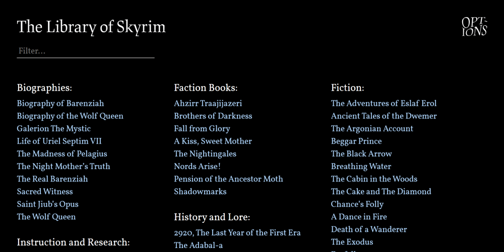
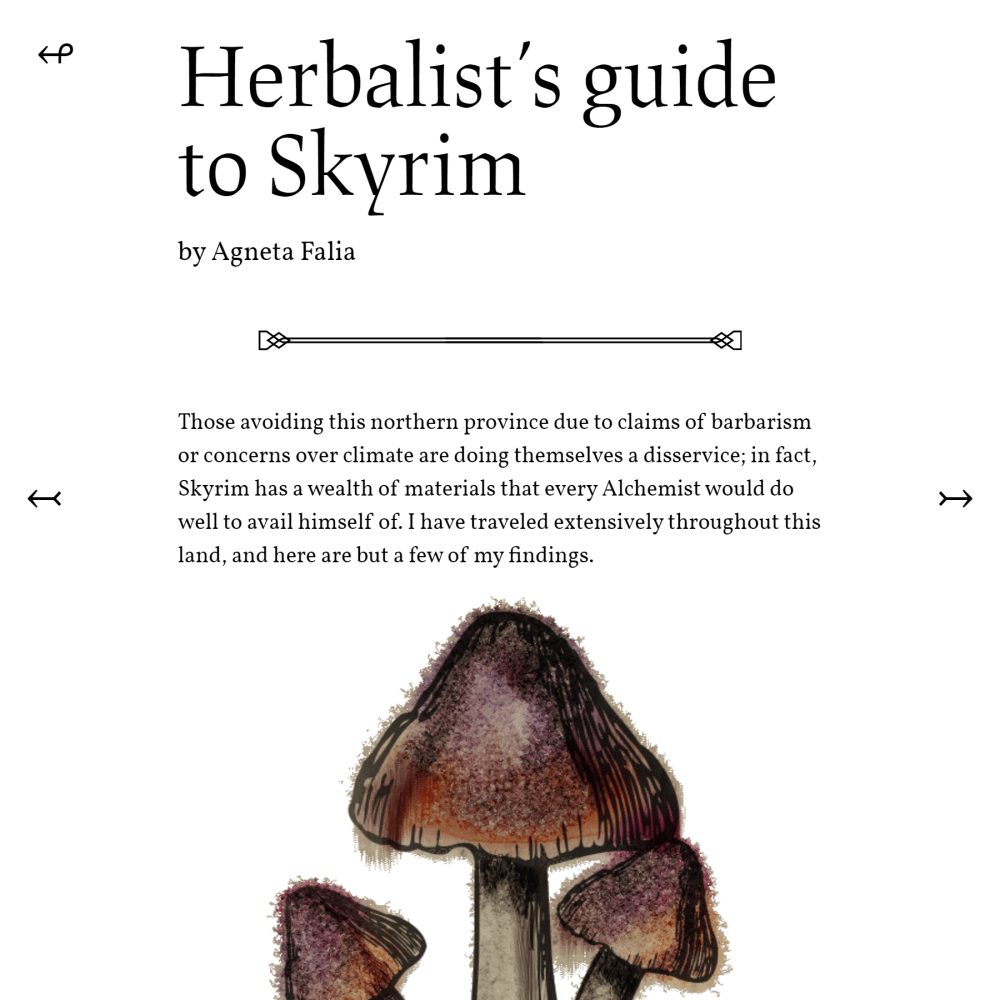
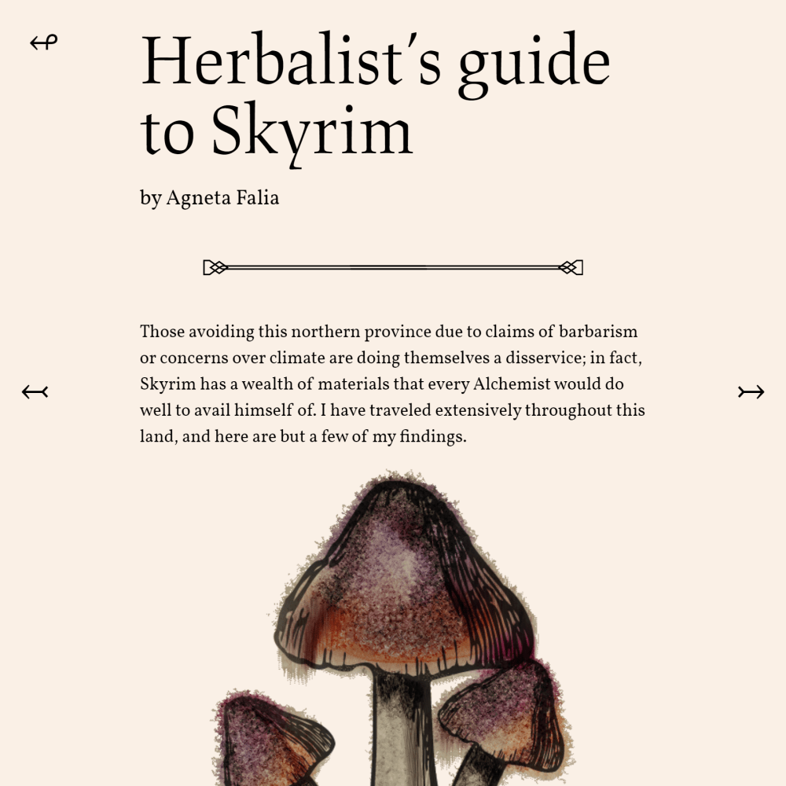
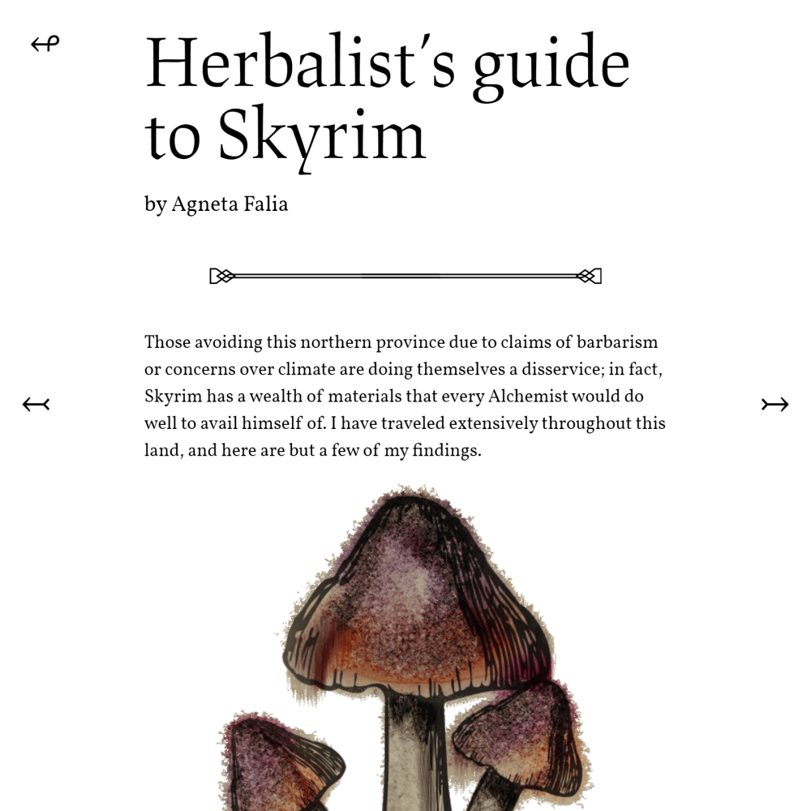
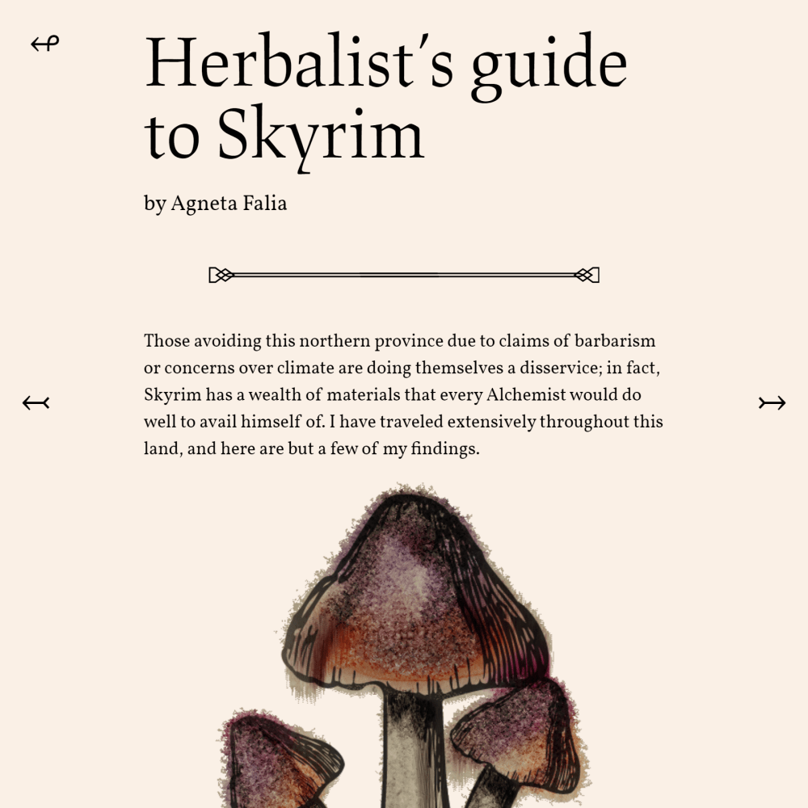
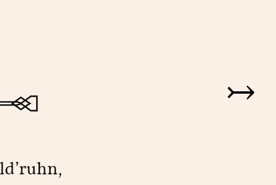

There must be a better way!
My friend, Riley, knew there had to be an easier way to read Skyrim books. His website of choice, imperial-library.info, reads poorly on mobile devices. Worse yet, it uses "straight quotes." Ugh. He had started cleaning up texts into MS Word docs, but he contacted me in hopes we could put them on the internet. I obliged.
Compiling and beautifying every book in Skyrim was a test of file management, robust design, and patience.
The result is a pleasure to read and navigate on all screen sizes.

Hundreds of books, sorted by category
 



Users can read in one of three color modes.

Links to the next and previous book in the category span the full height of the page.
I learned a ton about generating and managing files with Node.js, a technique I use on my blog.